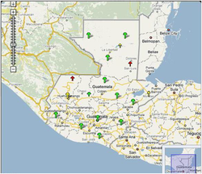

El Instituto Geográfico Nacional -IGN- uniendo esfuerzos en coordinación con Instituciones afines, Unirios y Conred, llevó a cabo el proyecto "La Canoa", consiste en trabajos de levantamiento topográfico, geodésicos , dibujo de curvas de nivel, eje central y secciones (derechas e izquierdas) en la cuenca del río del mismo nombre, ésto con el fin de contar con información actualizada y precisa para la construcción del puente que unía Salamá, Baja Verapaz y Chuarrancho, Guatemala, que fué arrastrado por la crecida del río Motagua durante el paso de la tormenta Agatha, en mayo de 2010.

El Instituto Nacional de Sismología, Vulcanología, Meteorología e Hidrología, INSIVUMEH, informó que se prevía el desplazamiento de una onda del Este, en el pacífico guatemalteco, disturbio que favorecería a que las lluvias se incrementaran. Se previó que Las regiones con mayor precipitación serían la región sur hacia la meseta central y nor-oriente.
Los reportes oficiales de la Coordinadora Nacional para la Reducción de Desastres, CONRED, indican que el recuento total es de 39,344 personas se encuentran en riesgo; 152,488 personas han resultado afectadas; 54,901 damnificados; 88,971 albergados en 446 centros habilitados para atenderlos; 142,959 evacuados; 102 desaparecidos; 147 heridas de gravedad y 156 personas fallecidas. El Centro de Operaciones de Emergencia de la Oficina Nacional, presentó un consolidando de la Evaluación de Daños y Análisis de Emergencias – EDAN
Dentro de las actividades de emergencia del Instituto Geográfico Nacional se elabora el mapeo de los daños ocasionados por la tormenta, sobre 150 hojas de la base cartográfica a escala 1:50,000 y 4 hojas cartográficas a escala 1:15,000, del área urbana del área urbana de la ciudad capital, donde se muestran e indican los daños en las diferentes áreas geográficas de la República de Guatemala.
Esta información mapeada fue impresa y distribuida a la Presidencia, Vicepresidencia, Coordinadora Nacional para la Reducción de Desastres –CONRED-, Ministerios, Secretarias y a todas las entidades del estado de Guatemala, para atender la emergencia.
Ejecutado al 100% al 2010 Proyectado 0% al 2011
Elaboración de un proyecto de toma de fotografía aérea a color de resolución de 8 cm para 19 cabeceras municipales de la Republica de Guatemala, en total 70 kilómetros cuadrados aproximadamente de superficie, para generar ortofotos digitales a color con una resolución final de 10 cm aproximadamente.
Este vuelo fotogramétrico se desarrollara en los meses de noviembre y diciembre del 2010 que es parte del periodo de condiciones climáticas favorables para la región de Guatemala. Este proyecto de vuelo se desarrollara dentro del Programa de Administración de Tierras Fase II delarreglo institucionaln o convenio de enlace entre el Instituto Geográfico Nacional y El Registro de Información Catastral, financiado por el Banco Mundial.
Obtención de lineas de superficies de 240 kilómetros lineales por medio de restitución fotogramétrica de los Ríos Coyolate, Madre Vieja, Nahualate y Suchiate, como se observa en los esquemas de abajo, utilizando fotografía aérea digital a color de la camara Ultracam D Vexcel. Este trabajo se realizo a travez del proyecto sobre la Generación de Información Técnica y Científica para la reducción de riesgo a desastres en cuatro cuencas hidrográficas de la República de Guatemala, financiado por el Banco Mundial.
Para los procesos de restitución fotogramétrica se utilizaron dos estaciones fotogramétricas digitales Leica incluyendo los programas de Leica Photogrametric Suite, Microstation y PRO600, el cual a través de la capacitación adquirida por la misma empresa de Leica y la empresa de Swisphoto de Suiza sirvió de plataforma y base para la generación de esta información dentro del componente de los análisis hidrológicos de los ríos para el estudio de estas cuencas.
Actualmente Guatemala, tiene adoptado el Marco de Referencia ITRF94, Época 97.5, por lo que para el año 2011 se adoptará el ITRF2005, Época 2000 de SIRGAS.
Dentro del marco de desarrollo regional y latinoamericano, para la homogenización de los datos geoespaciales y georeferenciación de la Cartografía continental.
Por lo que se estará trabajando en el año 2013 para el Establecimiento del Marco de Referencia para Guatemala IGS08 época pendiente a determinar.
Levantamiento Geodésico con GPS con el objeto de determinar la deformación de la corteza terrestre en el sentido horizontal y vertical. Esta Actividad se ha trabajado conjuntamente con estudiantes de la Universidad de Michigan USA y técnicos del Instituto Nacional Sismología, Vulcanología, Meteorología e Hidrología INSIVUMEH.
El Instituto Geográfico Nacional -IGN- uniendo esfuerzos en coordinación con Instituciones afines, Unirios y Conred, llevó a cabo el proyecto "La Canoa", consiste en trabajos de levantamiento topográfico, geodésicos , dibujo de curvas de nivel, eje central y secciones (derechas e izquierdas) en la cuenca del río del mismo nombre, ésto con el fin de contar con información actualizada y precisa para la construcción del puente que unía Salamá, Baja Verapaz y Chuarrancho, Guatemala, que fué arrastrado por la crecida del río Motagua durante el paso de la tormenta Agatha, en mayo de 2010.
